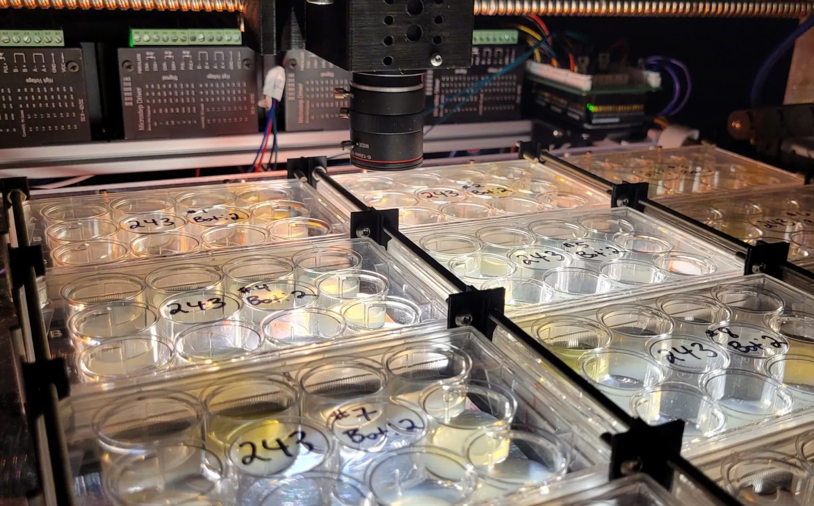

Ora’s WormBot-AI platform combines robotics, computer vision, and deep learning to run high-throughput drug screening in live animals — at a scale and speed unmatched by traditional methods. Every experiment is fully automated, from imaging to analysis, enabling our system to uncover subtle biological effects and discover therapeutic candidates that would be missed in vitro. This is drug discovery, powered by intelligent automation.
Watch WormBot-AI in real-time as it analyzes movement, behavior, and lifespan in C. elegans models of Alzheimer’s disease. Our AI tracks hundreds of individual animals per trial, capturing nuanced phenotypic changes and quantifying therapeutic impact as it happens. This live demonstration showcases a promising intervention that restores mobility and extends healthspan — proof of how automation accelerates translational insight.